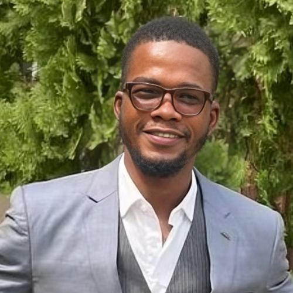

Summer 2026: Applied Scientist Intern, AWS Bedrock — Science Team
Email: skolawol[at]cs[dot]cmu[dot]edu

I'm a PhD student at Carnegie Mellon, advised by Virginia Smith, working on the efficiency of large language model inference — making capable models cheaper and faster to run, from everyday hardware to production-scale serving. A thread through much of my work: recovering what you need from what the forward pass already computes — to prune a model, route it, or shrink its memory.
This summer, I'm on AWS Bedrock's Science team, working with Nathan Pemberton and Kyle Ulrich on inference optimization for speculative-decoding serving.
Selected Publications
Four threads — compression, adaptive serving, KV-cache, and parallelism — most sharing one instinct: read what you need from the forward pass. Full list →
Evicts KV-cache tokens by the change in the model's internal representation — read straight from the forward pass, with no attention matrix — extending the feasible context several-fold inside standard FlashAttention stacks.
Steven Kolawole*, Lucio Dery*, Jean-François Kagy, Virginia Smith, Graham Neubig, Ameet Talwalkar
arXiv, 2024
Forward-pass-only structured pruning that outperforms gradient-based methods at a fraction of the memory — making LLM compression feasible on everyday hardware.
Steven Kolawole*, Don Dennis*, Ameet Talwalkar, Virginia Smith
TMLR, 2025
A training-free cascade that uses agreement across an ensemble as a confidence signal for routing — cutting inference cost several-fold while holding or improving accuracy.
Steven Kolawole, Keshav Santhanam, Virginia Smith, Pratiksha Thaker
NeurIPS 2025, Datasets & Benchmarks Track
Builds a benchmark showing ~10% of real user queries carry latent parallelism, and decomposes them for substantial latency wins with no hardware changes.
I lead ML Collective Africa, a pan-African sub-community (264 members) of ML Collective, where we support under-served, early-career researchers through research focus groups, mentorship, training, and compute — helping members publish at top venues despite limited institutional resources. Since 2022 I've organized annual fundraisers that send African students to the Deep Learning Indaba, and I occasionally contribute to Black in AI's ELAI program.
From 2023 to 2025, I mentored 20+ underrepresented graduate-school aspirants at STEM for Development. During undergrad, I helped run dozens of technical training programs reaching 3,000+ students and personally taught several hundred.
Outside research, I enjoy powerlifting, amateur boxing, watching LFC matches, and reading widely. I'm always up for conversations that connect technical work with broader social impact.
The Four Six Years of BSc.
Before CMU, I did my BSc in Computer Science at the Federal University of Agriculture, Abeokuta (FUNAAB), Nigeria, advised by Dr. Adebayo Abayomi-Alli. Academic-union strikes and the COVID lockdown stretched a four-year degree into six — which, fortunately, gave me far more room than a typical undergrad to figure out what I actually cared about.
I used it. Around 27 tech conferences across the globe, a pile of hackathons and internships, and — from early 2021 — learning to do research independently with ML Collective (with cameos at Masakhane and Cohere For AI), mentored by Dr. Rosanne Liu and Dr. Jason Yosinski. My first finished project, on sign-language understanding, won the Nigeria Computer Society's National AI Champion award; later, friends and I built a real-time opinion-mining system for digital assets and won a ~$115K Algorand Foundation grant to ship it — which let me keep doing independent research without worrying much about rent.
I'm a "community-taught" ML practitioner, so a lot of those years went to giving back — Data Science Nigeria, Google Developer Student Clubs, She Code Africa, NACOS, and ML Collective. That unconventional path — building research capability outside formal structures — is exactly what drives my work on lowering the barriers to AI today.
For the human record: in the earliest years I directed choirs at local churches (vocals, drums, piano); my BSc was also roundly punctuated by real existential crises [1, 2]; and my final year saw me trade award-worthy social awkwardness for a minor reputation as a local clown, obsessively fine-tuning my Afro-pop dance moves.